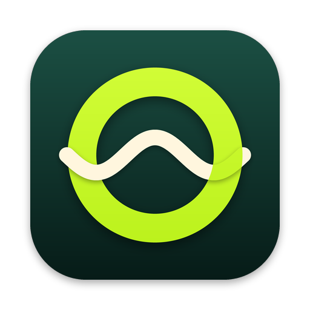

OndoPrivacy policy
Last updated: October 13, 2026
Ondo does not collect, sell or share any personal data. There is no account, no advertising and no tracking, and the app itself sends no analytics.
Data stored on your device
- Your playlists, guide sources, favourites, lists, watch history and settings are stored only on your device.
- Passwords and tokens of your providers, your parental PIN and your optional TMDb key are stored in the system keychain.
- Downloaded movies and episodes stay on your device until you delete them.
Network requests
The app connects directly to the servers you configure (your IPTV provider and guide sources) and, if you enter a key, to The Movie Database (TMDb) to show trending titles. Casting uses AirPlay or Google Cast on your local network. These services receive the requests needed to work, under their own privacy policies.
Google Cast (iPhone and iPad)
To cast to a Chromecast, Ondo includes Google's Cast SDK. According to Google, this component may send Google diagnostic and usage data about casting (performance, device identifier, approximate location, use of the cast controls) to keep device discovery reliable. This data is not linked to your identity and is not used for tracking; Ondo turns the SDK's optional analytics logging off. See Google's privacy policy.
Children
Ondo offers profiles for kids and a parental PIN. It does not knowingly collect any data from anyone.
Contact
Questions: open an issue on GitHub.
Politique de confidentialité
Dernière mise à jour : 13 octobre 2026
Ondo ne collecte, ne vend et ne partage aucune donnée personnelle. Pas de compte, pas de publicité, pas de pistage, et l’app elle-même n’envoie aucune statistique.
Données stockées sur votre appareil
- Vos playlists, sources de guide, favoris, listes, historique et réglages restent uniquement sur votre appareil.
- Les mots de passe et jetons de vos fournisseurs, votre code PIN parental et votre éventuelle clé TMDb sont conservés dans le trousseau du système.
- Les films et épisodes téléchargés restent sur votre appareil jusqu’à leur suppression.
Requêtes réseau
L’app se connecte directement aux serveurs que vous configurez (votre fournisseur IPTV et vos sources de guide) et, si vous saisissez une clé, à The Movie Database (TMDb) pour afficher les tendances. La diffusion utilise AirPlay ou Google Cast sur votre réseau local. Ces services reçoivent les requêtes nécessaires à leur fonctionnement, selon leurs propres politiques.
Google Cast (iPhone et iPad)
Pour diffuser sur un Chromecast, Ondo intègre le SDK Cast de Google. Selon Google, ce composant peut envoyer à Google des données de diagnostic et d’utilisation de la diffusion (performances, identifiant d’appareil, position approximative, usage des commandes de diffusion) pour fiabiliser la détection des appareils. Ces données ne sont pas liées à votre identité ni utilisées pour du pistage ; Ondo désactive la journalisation analytique facultative du SDK. Voir la politique de confidentialité de Google.
Enfants
Ondo propose des profils enfant et un code PIN parental. L’app ne collecte sciemment aucune donnée de quiconque.
Contact
Questions : ouvrez un ticket sur GitHub.